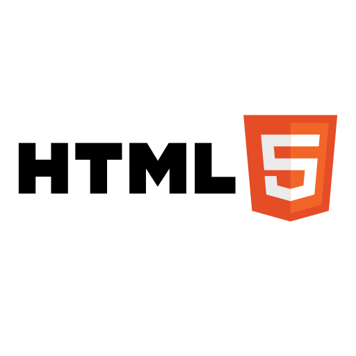
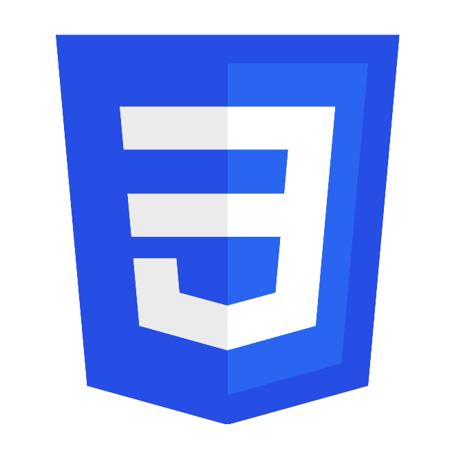
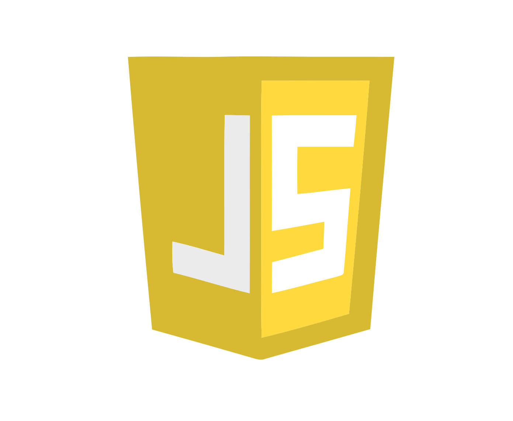
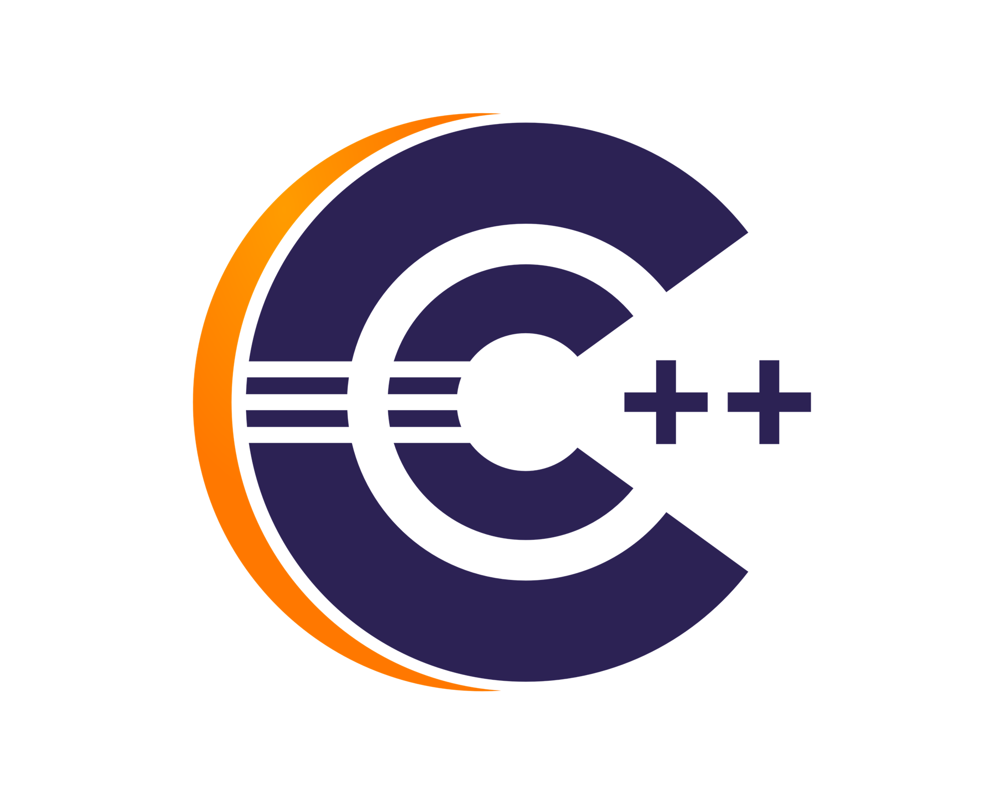
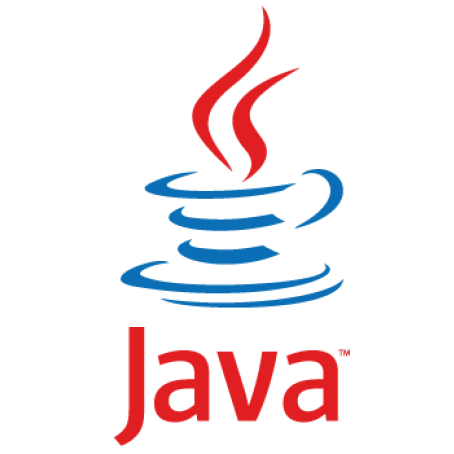
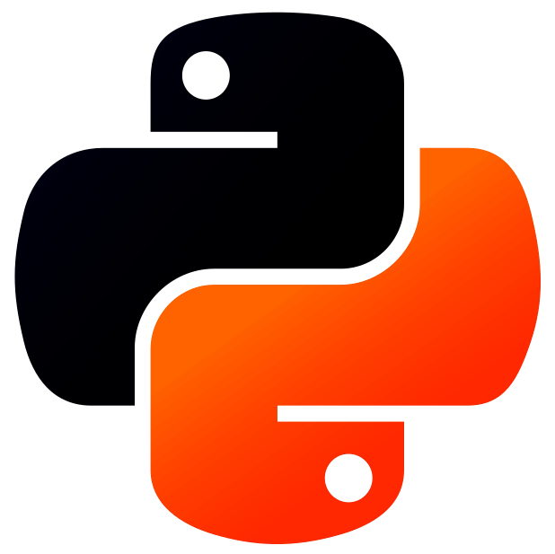
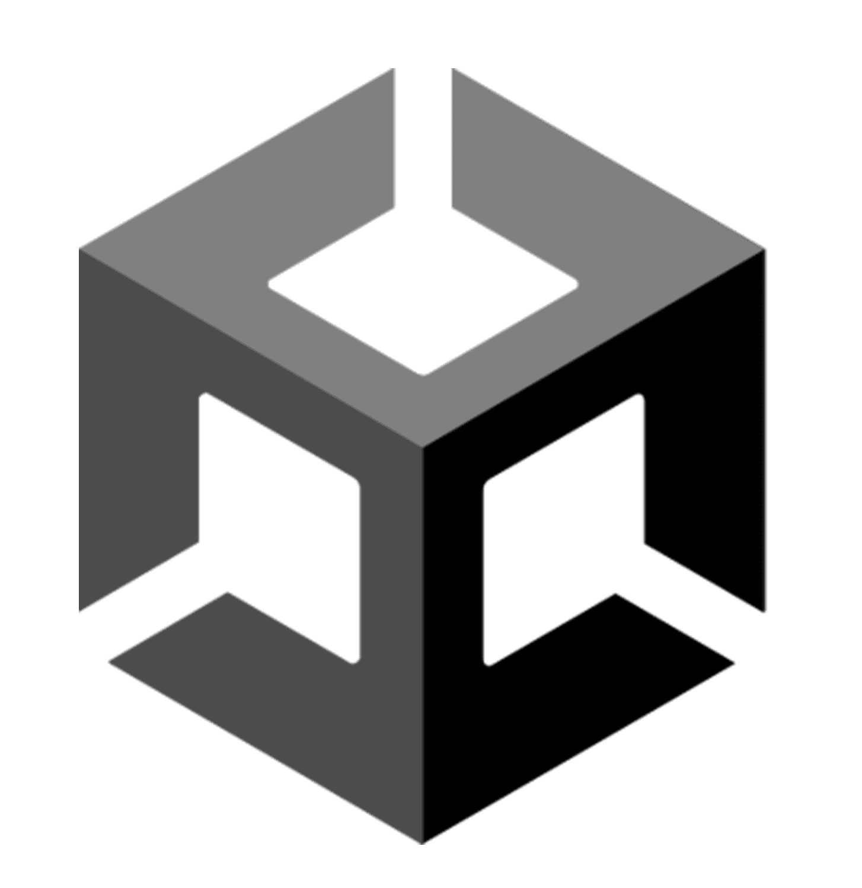

About Me:
I'm a computer science enthusiast who likes to code.
I've been proactively studying: computer programming and various programming languages through which I've continuously improved my coding skills and practices, by doing lots of exercises and project work. I've been gathering knowledge, handiness and experience in working with different programming languages, and built up the background and the foundation required to boost up my skills, independently, whenever necessary, or to help and/or assist others with the expertise.
Starting from low-level C, and up to higher-levels C++, C#, Java, Python, and JavaScript, I've been following the passion for writing code and thinking algorithms. I've exercised and developed various apps: from tiny-little programs to small video games or in-browser apps, by the means of APIs (OpenGL), Frameworks (Java.Swing, .NET, tKinter), Game Engines (Unity), or through the use of HTML and CSS together with JavaScript.
Technologies Used:
|
HTML  |
CSS  |
JavaScript  |
Angular
|
C++  |
C#
|
Java  |
Python  |
Unity  |
.NET |
|---|